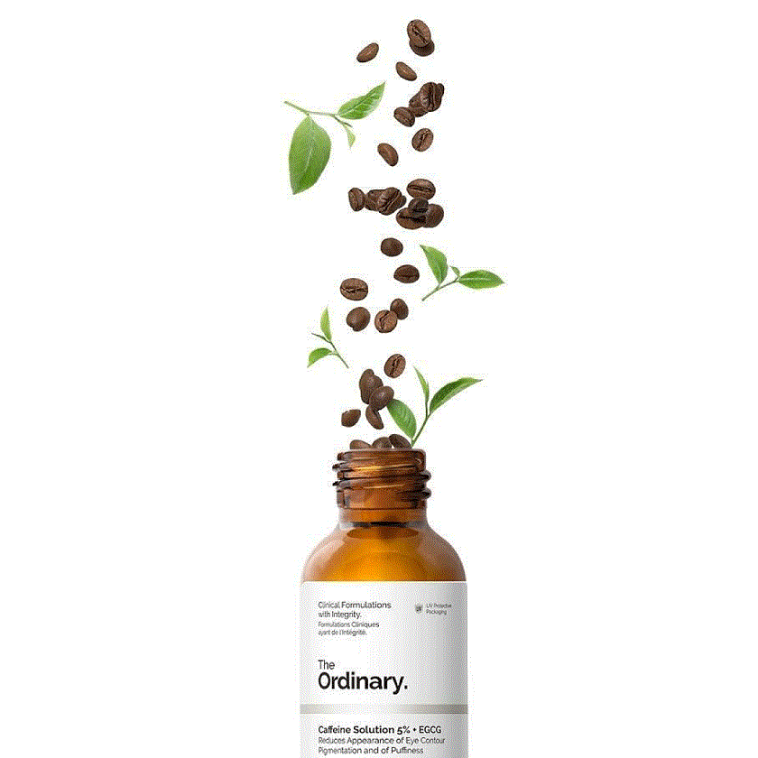
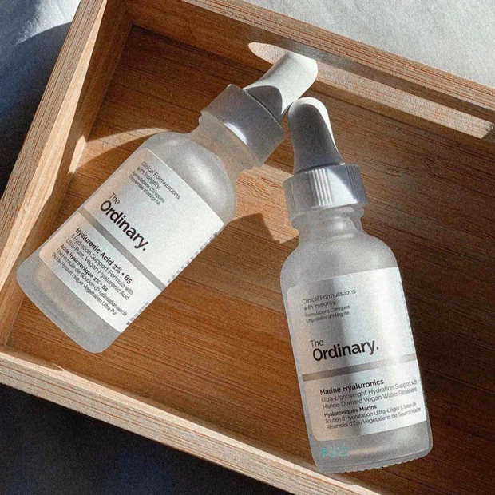
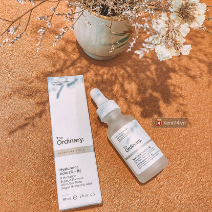
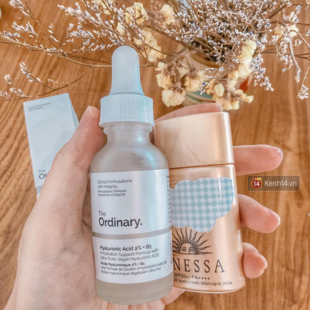

Đăng nhập
Đăng ký
TRANG CHỦ
GIỚI THIỆU
SẢN PHẨM
BLOG

Da tôi giảm tiết dầu hẳn nhờ lọ serum làm căng da “siêu đỉnh” giá chưa đến 300k, bôi cùng kem chống nắng da ráo mịn cả ngày
Tôi vốn thuộc team da hỗn hợp dầu, dầu thường đổ ở mũi và hai bên má gần mũi. Và tôi cũng đã thử qua nhiều loại nào là kem chống nắng, cushion, phấn phủ được giới thiệu có khả năng kiềm dầu… nhưng không loại nào phát huy kết quả như tôi thật sự mong muốn. Tình cờ thay, tôi biết đến serum cấp ẩm The Ordinary Hyaluronic Acid 2% + B5 và quyết định rước về.  Thú thật, ban đầu tôi có ý định “múc” vì nghe danh tiếng làm da căng bóng tức thì của “em ấy” thôi nhưng rồi khi thử lần đầu tiên, tôi bất ngờ nhận ra một công dụng tuyệt diệu của “ẻm” mà trước đây đọc review chưa thấy ai nhắc đến, chính là giúp da ráo mịn cả ngày, đồng thời kiềm dầu siêu đỉnh. Nếu trước nay da tôi đổ dầu 10 phần, thì khi xài em nó lượng dầu giảm chỉ còn 1-2 phần thôi.  Serum “ngoài rẻ-trong xịn” của The Ordinary có kết cấu hơi đặc, trong suốt, không mùi. Nhưng đừng lo chất “sệt như soup” của serum sẽ gây dính nhớp, khó thẩm thấu vào da vì khi thoa lên rồi bạn sẽ có cảm giác mát lạnh cực thích, serum chỉ hơi dinh dính lúc đầu, sau khoảng 7-10 giây vỗ nhẹ là thấm ngay, cho da đàn hồi, căng khoẻ hơn rõ thấy làm tôi ưng cực kì!GIF. Nhưng có một điểm tôi nghĩ bạn không nên trông chờ từ em serum “ngon rẻ” này nhất là về khả năng làm căng bóng da “như lời đồn”, bởi tôi chỉ thấy da căng khoẻ khi serum thấm vào da, chứ không phải tạo hiệu ứng da glowy căng bóng ngậm nước gì cả. Đổi lại, em nó giúp cấp ẩm cho da rất tốt nhờ thành phần Hyaluronic Acid, vitamin B5 được điều chế theo công thức xịn sò, làm da phục hồi, bổ sung độ ẩm và kiềm dầu tốt.  Khi ở nhà không makeup và chỉ dùng 2 món “bảo bối” trên thì da tôi từ sáng đến 7h tối vẫn “ok lah” quá chừng. Còn khi makeup với cushion và ra ngoài thì tôi thấy lớp nền bền màu hơn vì da không đổ dầu nhiều nữa, làm việc từ sáng đến chiều mà vùng mũi, hai bên má không hề bị bóng dầu mà vẫn ráo, kết quả thật khó tin nhưng tôi thấy đây là “công thức” skincare mà những ai da dầu, hỗn hợp dầu như tôi đáng thử. Như bạn biết thì The Ordinary là hãng mỹ phẩm được lòng chị em đến đâu, vì sở hữu loạt sản phẩm với thành phần đẹp mà giá cả lại phải chăng, hợp túi tiền của nhiều cô gái. Tôi mua serum The Ordinary Hyaluronic Acid 2% + B5 với giá chỉ 270k và thấy quá “hời” cho một món skincare làm da săn chắc, đủ ẩm và kiềm dầu “best” cả ngày. Chốt lại thì đây là lọ serum “iu” nhất mà tôi từng dùng, tôi chắc chắn là còn mua lại “em ấy” dài dài nữa. The Ordinary Hyaluronic Acid 2% + B5 (270.000 VNĐ) Giá: 5/5 Thiết kế: 4.5/5 Hiệu quả: 5/5
GÓP Ý
GỬI ĐI
CÔNG TY CỔ PHẦN XUẤT NHẬP KHẨU HENKA
Địa chỉ : 24 Huỳnh Khương An, phường 5, Quận Gò Vấp, Hồ Chí Minh
Email : ordinary.com.vn@gmail.com
Hotline : 034.467.9721
Website : https://ordinary.com.vn/
CHĂM
SÓC
KHÁCH
HÀNG
Giới
thiệu
Hướng
dẫn
mua
hàng
Chính
sách
vận
chuyển
Chính
sách
đổi
trả
Điều
khoản
dịch
vụ